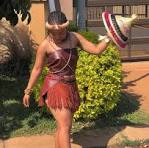

SESHOESHOE
Seshoeshoe dresses are traditional garments worn by women in Lesotho and other southern African countries, characterized by rich colors such as royal blue, emerald green, and deep red. These dresses hold a significant cultural importances, symbolizing pride in one's heritage and identity.
Seana-Marena is a stunning blanket that represents Basotho cultural heritage, featurig vibrant colors and intricate designs that tell a story of tradition and identity. It is worn by both men and women.
Thethana is a Basotho traditional garment worn by young girls and women, symbolizing cultural identity and pride.It is made of Tsikitlane leaves.

www.lce.ac.ls
TS'ETS'E
Ts'ets'e is a Basotho hat worn by both men and women, it is often worn in different regions in the southern African countries. It is made from woven straw or other natural materials
www.aranda.co.za
MOKOROTLO/MOLIA-NYEOE
Mokorotlo hat is known for its unique conical shape, often made from woven straw or other natural materials. This hat symblolizes Basotho identity and often worn by men as part of their traditional attire.
www.lce.ac.ls
LEQAPHA
Leqapha is Basotho cultural blanket that is worn as a symbol of identity, cultural heritage and warth. It is often worn by men from Basotho initiation school.
www.lce.ac.ls
LIFATLA
Lifatla are Basotho traditional footwear made of leather or woven grass, designed for comfort and durability to navigate the rugged terrain of Lesotho's mountainous landscape.
www.lce.ac.ls
LETLAMA
Letlama is a brand name for clothing and apparel, showcasing Basotho traditional desings in morden fashion.
www.aranda.co.za
MOSE OA KHOMO
Mose oa khomo is Basotho's traditional garment made from cowhide, typically worn by women.
www.lce.ac.ls
Likhohlopo
Likhohlopo are type of waterproof footwear made of rubber or plastic, meant to keep feet dry in wet or muddy conditions.
www.lce.ac.ls
LEHLOSI
Lehlosi is Basotho royal blanket made from wild animals' skin.
www.lce.ac.ls
MOTLATSI
Motlatsi is another kind of Basotho's traditional blankets which is commonly worn by women.
Lefitori is another name of for Victoria blanket named in honor of Qurrn Victoria of England. It is made of high-quality wool.
Nkoe design is inspired by the stones used to build homes and is available in various colors.